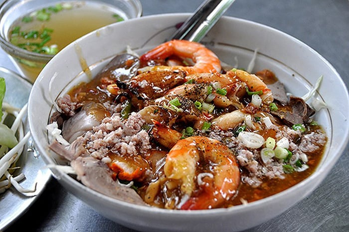
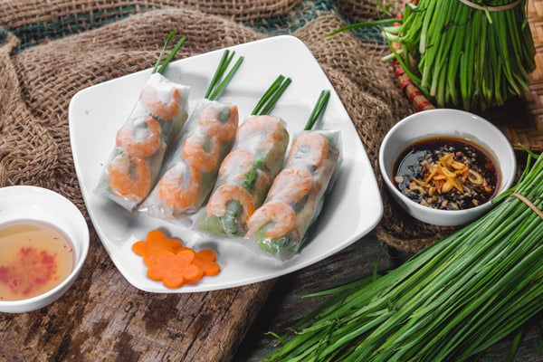
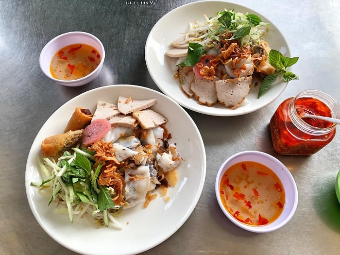
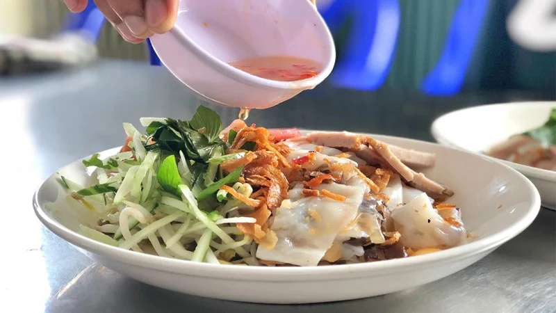
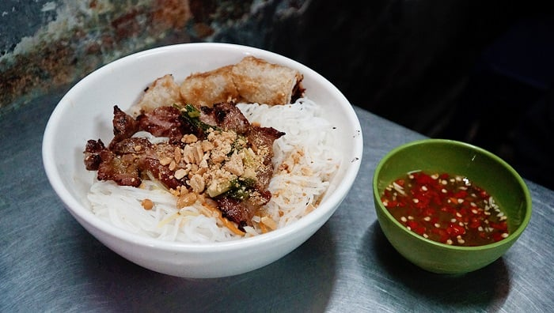

A Crawl of Ho Chi Minh City's Amazing Street Food
Food in Ho Chi Minh City is an absolute delight for foodies. From street food to fine dining, there are plenty of delicious dishes for you to enjoy on your Ho Chi Minh food tour. Get ready to embark on a culinary journey as we explore some of the most delectable delicacies in this city!
1. Clear rice noodle soup (Hu tieu) – Ho Chi Minh City food for nights
This comforting noodle soup dish is very popular in Ho Chi Minh City's street markets. The sellers often offer a variety of toppings, such as fresh herbs and chopped spring onions, to customers who want to customize their hu tieu to their own taste. This dish also makes a great warm meal during the cooler months of the year.

What to eat tonight in Saigon? Try a delicious bowl of clear rice noodle soup (Source: Collected)
Hu tieu was originally created by Chinese immigrants who settled in Ho Chi Minh City during the 19th century. Since then, it has become a favorite specialty throughout Vietnam. Unlike other types of Vietnamese soup which are typically cooked with beef fat or broth flavored with spices, hu tieu is notable for its mild taste, which comes from the use of tapioca flour. This flour helps thicken the broth without adding too much flavor.
2. Fresh spring rolls (Goi cuon) – A must-eat food in Ho Chi Minh City
Fresh spring rolls, also known as goi cuon, are another must-try in Ho Chi Minh City. This traditional treat is made of soft rice paper filled with a variety of ingredients like pork, shrimp, vermicelli noodles, herbs, and vegetables. The combination of all these ingredients creates an explosion of flavors and textures in your mouth, making it one of the most memorable dishes you will try during your trip.

Spring rolls are a staple when it comes to street food in Ho Chi Minh City (Source: Collected)
The history of goi cuon dates back to the early 20th century, when Chinese immigrants began settling in Vietnam and brought their own customs and food recipes along. As the years passed by, Vietnamese people incorporated more local ingredients into this dish, such as fresh mint leaves, herbs, and dipping sauce, which gave birth to what we now know as goi cuon.
3. Crab paste vermicelli soup (Bun rieu cua)
Bun rieu cua is a local delicacy of Ho Chi Minh City. This savory noodle soup dish is made of crab paste and pork stock, topped with thin rice noodles and ingredients like tomatoes, tofu, and herbs. The result is an incredibly flavorful and comforting soup that is sure to satisfy even the pickiest of eaters.
The origin of this iconic dish can be credited to the Chinese immigrants who settled in Vietnam during the early 20th century. They added Vietnamese local herbs and other ingredients to their own food recipes. Along with other imported dishes, bun rieu cua is a result of traditional Chinese cooking methods and local Vietnamese flavors.

Bun rieu is a rustic dish of the Southern region (Source: Collected)
4. Steamed rice rolls (Banh cuon)
Banh cuon is a specialty consisting of steamed rice rolls typically filled with pork, mushrooms, and spices. The rice rolls are topped with fried shallots, scallions, and herbs. This is a great option for those looking for something light yet flavorful.
The combination of local herbs and spices gives this dish a unique flavor. Additionally, it is made of lean proteins like pork and mushrooms, which is perfect for those looking for a healthier meal.

Banh cuon is not a new dish but still has a lot of charm (Source: Collected)
5. Grilled pork and rice vermicelli (Bun thit nuong)
Grilled pork and rice vermicelli (bun thit nuong) is a traditional Vietnamese dish consisting of grilled pork, fresh vegetables, and vermicelli noodles. The pork is marinated in a savory mixture of garlic, fish sauce, sugar, and other spices before being grilled to perfection.
Once everything is cooked, the pork, vegetables, and noodles are mixed in a bowl before being garnished with fresh herbs such as cilantro, mint, and basil leaves. The rich flavor of the pork, combined with the crunch of fresh vegetables and the mildness of vermicelli noodles, makes it a truly delicious meal.

Vermicelli with grilled meat is a popular and easy-to-find food in Ho Chi Minh City (Source: Collected)